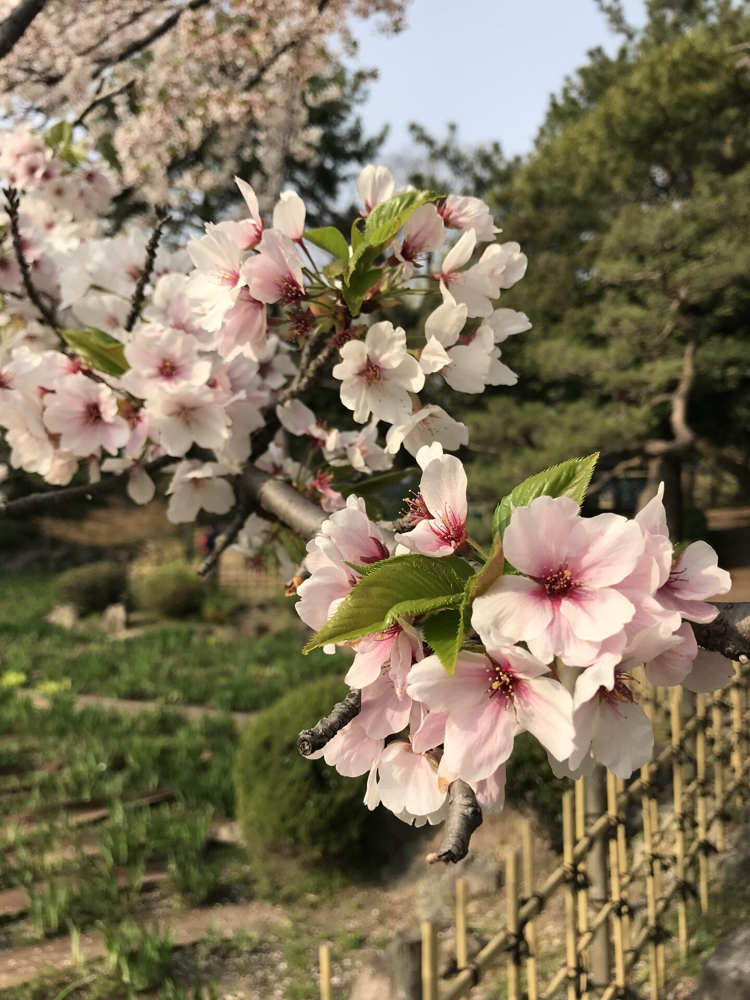

Travel Stories
Moments, reflections, and stories from my journeys around the world

My First Flight
The day I left Nepal to begin a completely new chapter of my life in Japan — the nerves, the goodbyes, and the first glimpse of a world I had only imagined.
Read Story →
A New Beginning
Landing in Japan for the first time, discovering a world unlike anything I had ever known, and taking my first steps toward a new life.
Read Story →
Adapting to foreign life
The evening I realised Japan was no longer just a place I was living, but a place where unfamiliar streets slowly became home.
Read Story →
International Student in Japan
From learning Japanese and adapting to a new education system to making international friendships, every day became a lesson far beyond the classroom.
Read Story →
My First Spring in Japan
Walking beneath thousands of cherry blossoms, I discovered why spring is one of Japan's most treasured seasons.
Read Story →
Nagoya from Above
A short travel story and photo of Nagoya captured from a skyscraper, exploring the city's urban landscape and my reflections on the experience.
Read Story →